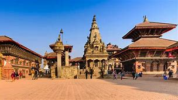

7 . Bhaktapur Durbar Square
|  |
| district |
Bhaktapur |
| location |
Khwopa,Bhaktapur |
| date of established |
|
Bhaktapur durbar square is the next durbar square among the three durbars square within the Kathmandu valley. Bhaktapur Durbar square generally is the plaza that lies in front of the palace of the oldest kingdom Bhaktapur.
Talking about the location of the durbar square, it lies in the Bhaktapur city that lies 13 km east of the Kathmandu city. There are four distinct squares within the whole durbar square respectively known as Durbar Square, Taumadhi square, Dattatraya square and Pottery square.
As in other two durbar square, several temples, idols, structures, and monuments are built within the durbar square along with the royal palace that narrates their own legends and history. The major attraction of this durbar square is a royal palace with fifty-five windows also known as 55 window palace and in Nepali, pachpannajhyale durbar.
The fifty-five window palace or the palace of fifty-five windows is built during the period of Malla king YakshaMalla in 1427 A.D. In the period of 17th century, the palace was renovated and restructured by the king BhupatindraMalla.
The wooden carving of pachpannajhyale durbar is considered to be a unique masterpiece structured in that historical period. This durbar is the oldest structure or monument present in Nepal.